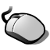
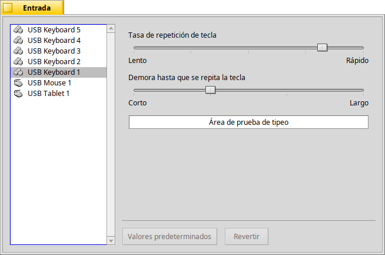
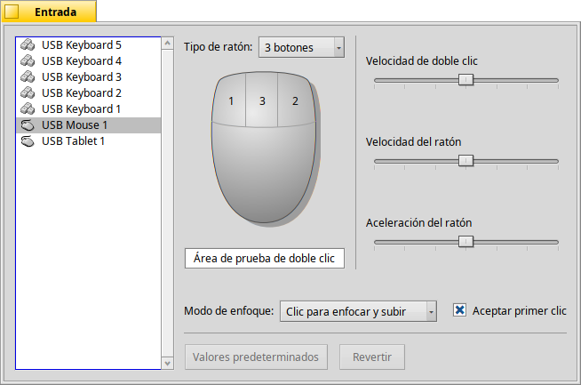
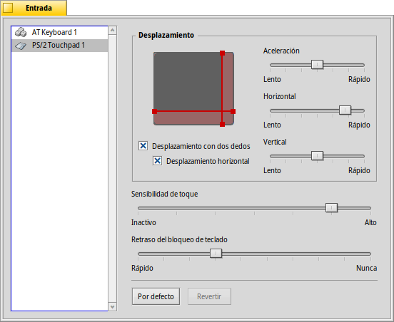

| Índice |
|
Teclado Ratón Panel táctil |
Entrada
| Barra de escritorio: | ||
| Ubicación: | /boot/system/preferences/Input | |
| Configuraciones: | ~/config/settings/Keyboard_settings ~/config/settings/Mouse_settings ~/config/settings/Touchpad_settings |
El panel de preferencias de entrada combina los cuadros de configuración de teclado, ratón y panel táctil anteriormente separados, más cualquier otro dispositivo de entrada reconocido por el sistema. La lista de dispositivos se encuentra a la izquierda, mientras que el panel a la derecha cambia de acuerdo con las configuraciones disponibles para el dispositivo seleccionado.
 Teclado
Teclado

Selecciona la velocidad de repetición y el retardo para que una tecla presionada comience a repetirse. Puede probar las selecciones en el campo de texto en la parte inferior.
| restablece todo a los valores predeterminados. | ||
| restaura los ajustes a como estaban al iniciar el panel de ajustes de teclado. |
Ratón

Primero seleccione su tipo de ratón: de 1, 2 o 3 botones. Se puede simular el segundo botón (o sea, el derecho) del ratón manteniendo presionado CTRL mientras hace clic con el botón izquierdo. Para el tercer botón de ratón (es decir, el central), la combinación es CTRL ALT y hacer clic con el botón izquierdo.
Se pueden cambiar de lugar los botones haciendo clic sobre ellos y eligiendo su nueva poición en el menú emergente.
Con los deslizadores a la derecha podrá ajustar la velocidad del doble clic, la velocidad del ratón y su aceleración. El área de prueba debajo de la imagen de un ratón puede usarse para verificar si la velocidad del doble clic es la adecuada: si al hacer doble clic sobre una palabra no la selecciona, es por que el ajuste está establecido en un nivel demasiado rápido (o tendrá que habituarse a hacer clic más rápidamente).
Hay tres que determinan cómo reaccionan las ventanas a los clics:
| Esta es la configuración predeterminada: al hacer clic en la ventana esta recibe el enfoque y es traída a primer plano. | ||
| Hacer clic en una ventana solamente le da enfoque, pero no la traerá a primer plano automaticamente. Para hacer eso, deberá hacer clic en su pestaña de título o borde o hacer clic en cualquier lugar mientras mantiene presionadas las teclas de gestión de ventanas CTRL ALT. | ||
| The window under the mouse pointer automatically gets the focus. Actually raising it, is done as described in the |
Activating relieves you of having to first put the focus on an inactive window in order to trigger widgets like a button or menu. This bears the risk of unintentionally closing a window, for example, by accidentally hitting the close button when aiming for the window tab. On the other hand it speeds up your workflow considerably.
Todas las configuraciones se aplican inmediatamente.
| restablece todo a los valores predeterminados. | ||
| restaura los ajustes a como estaban al iniciar el panel de ajustes de ratón. |
Panel táctil

By dragging the red vertical or horizontal lines on the touchpad representation, you set the scroll area (slightly reddish against the gray general touch area). Moving your finger on that part of the pad will move the scrollbars of a window accordingly.
To the right are sliders to set the general scroll acceleration and the vertical and horizontal scrolling speed.
The acceleration setting decides how much quicker a list scrolls by if you swish over the scroll area very fast. The scrolling speeds control the general speed when using the scroll area in a "normal" way.
Below the touchpad graphic are checkboxes to enable for vertical and horizontal scrolling. Move two fingers in parallel vertically or horizontally to move the scrollbars of a window.
If you feel comfortable using this feature, you can dispense with setting scroll areas and instead use the whole pad for normal navigation.
Then comes another slider to set the . If your taps keep getting ignored, increase the sensitivity. If the system registers clicks all the time, while all you want is to move the mouse pointer, try decreasing it.
Finally, you can set a . If you accidentally tab your touchpad while typing and thereby move the text insert cursor, try to decrease the lock delay.
| restablece todo a los valores predeterminados. | ||
| restaura los ajustes a como estaban al iniciar el panel de ajustes de panel táctil. |
Here is a tip that's not related to the Touchpad preferences, but fits the general topic:
Did you know that you can do a drag and drop just by using the touchpad, i.e. not using the buttons? Just do a double click without lifting the finger after the second click. The picked up icon will stick to the mouse pointer and you can drag it around by moving your finger. Lifting your finger will drop the icon.
If your finger reaches a border of the touchpad while dragging an icon, but the mouse pointer hasn't yet reached the screen edge, how can you keep on dragging your icon? As soon as you lift your finger, the icon would be dropped.
Depending on your hardware, there's a nifty feature: just leave your finger without lifting at the touchpad edge. The mouse pointer will keep on moving on auto-pilot.